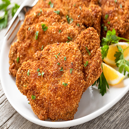

Fried chops

Ingredients
- Pork chops
- Flour
- Eggs
- Breadcrumbs
- Oil
Steps
- Salt your porkchops and put your oil on medium-high heat
- Take the porkchops and coat them all in your flour of choice (Anything can get the job done really)
- Beat some eggs in a bowl (one egg for 3 porkchops) and coat them in it
- Coat the porkchops in breadcrumbs
- Put oil in a pan and put in on medium-high heat and wait until hot
- Put the porkchops in the oil, wait until you see that the side is golden and flip it
- Wait until you see that the chop is fully golden, take it out and put a paper towel on it to drench the oil
- Enjoy!
Homepage